Phoenix Pool Resurfacing — Local Experts. Free Estimates.
Transform your worn, stained pool into a stunning backyard centerpiece. Expert craftsmanship with premium finishes that last.
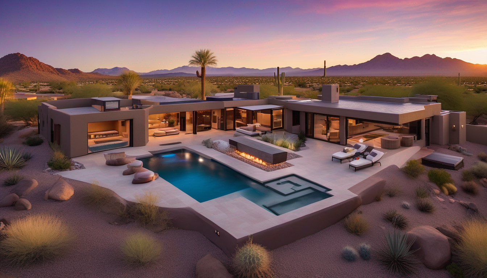
Is Your Pool Telling You It's Time?
Your pool shouldn't be a problem you manage. If you're dumping chemicals every week and still fighting algae, if the plaster feels rough enough to scratch skin, if the waterline is staining no matter how much you scrub — the surface is failing, not your chemistry.
Deteriorating plaster is Phoenix's most common pool problem, and it's one most homeowners catch too late. Once plaster breaks down, it becomes porous. Algae roots into the surface. Chemistry goes sideways no matter how much you spend on it. Chips and flaking start finding their way into your filter and pump. A resurface that costs $6,000 today becomes a structural repair that costs $18,000 if the shell is left exposed.
The pool that was supposed to be the centerpiece of your backyard becomes a liability — and every season you wait, it gets worse.
What Failing Plaster Actually Costs You
Most Phoenix homeowners don't resurface until the pool is embarrassing or actively damaging equipment. By that point, the math has already turned against them:
- Chemistry costs: Porous plaster absorbs chemicals instead of reflecting them. Homeowners with failing surfaces spend $80–$200/month MORE on chemicals than they should.
- Equipment wear: Plaster chips and calcium deposits travel through your pump and filter. Rebuilding a pump runs $500–$1,500. A sand filter replacement is another $800+.
- Resale value: A pool in poor condition is one of the fastest ways to lose buyer interest during a home sale. Agents in Phoenix know a bad pool can knock $10,000–$20,000 off your offer price — or kill the deal entirely.
- Seasonal urgency: Phoenix's pool season runs April through October. A resurface takes 7–10 days including cure time. If you miss the booking window in early April, you're looking at next year.
You're already paying the cost of a bad surface. You're just paying it in slow motion.
What Phoenix Homeowners Are Saying
Real experiences from real customers
"Our pool had been rough for three seasons. I kept treating it like a chemistry problem. After the resurface, I realized how much money I'd wasted — the surface was the issue the whole time. The crew drained and prepped in one day, new surface went in the next, and the water clarity after startup was better than the day we moved in."
— Michael T. Arcadia
"Got three quotes. The other two were vague about what they were actually doing and wouldn't break it down. Phoenix Pool Resurfacing gave us a written line-item quote on the spot and didn't pressure us at all. Chose them based on that alone. The Pebble Tec finish is perfect."
— Sandra R. Scottsdale
"Pool was 14 years old and had never been resurfaced. Algae had basically taken permanent residence no matter how much shock we used. After the resurface — two weeks ago now — we haven't touched the chemistry. Crystal clear. Wish we'd done this five years ago."
— James & Karen L. Ahwatukee
What Does Pool Resurfacing Cost in Phoenix?
Most companies won't post this. We will, because a homeowner who understands the pricing makes a better decision and has better results.
Pool resurfacing in Phoenix typically ranges from $4,500 to $12,000 for a standard residential pool. Here's what drives the variance:
Surface type:
- Basic white plaster — $4–6 per square foot. Durable, classic look. Needs resurfacing every 8–12 years.
- Quartz aggregate — $6–9 per square foot. More durable, stain-resistant, 12–15 year lifespan. Most popular choice.
- Pebble Tec / pebble aggregate — $8–12 per square foot. Premium durability (15–20 years), distinctive natural texture, wide color range.
Pool size:
- Small pool (under 400 sq ft surface area): $4,500–$7,000
- Standard pool (400–600 sq ft): $6,000–$10,000
- Large pool (600+ sq ft): $9,000–$15,000+
Condition of existing surface: If the old plaster is severely deteriorated or the shell has any structural cracks, prep work increases. We assess this during the free estimate and tell you upfront.
What's NOT driving the cost: our profit margin on your anxiety about not knowing. That's why we tell you the range before you ever sign anything.
What Happens When You Call Phoenix Pool Resurfacing
From your first call to diving back in — here's exactly what to expect
You Call or Request a Quote
We answer, or we call you back within 1 hour. No voicemail runaround. If you can describe the problem — rough surface, staining, chipping, algae issues — we can usually give you a ballpark range before we even come out.
Free In-Person Assessment
We come to you, inspect the pool surface, check the shell condition, and tell you honestly what it needs. Full resurface, patch repair, or just an acid wash — we give you a straight answer. No upsell pressure.
Written Quote, You Decide
You get a written quote with everything itemized — surface type, drain and prep, labor, materials, cure timeline. No verbal estimates. You decide on your own timeline. We don't take a deposit until you've signed and scheduled.
We Drain, Prep, and Resurface
Depending on your pool size and finish type, the job takes 4–7 days. We handle the full process: drain, chip and clean the old surface, apply the new finish, fill, and balance your chemistry for startup.
You Swim
New plaster needs a 30-day break-in period with careful chemistry management. We walk you through it. After 30 days, the surface is fully cured and built to last 10–15 years.
Pool Resurfacing Services
Premium finishes designed for Arizona's demanding climate
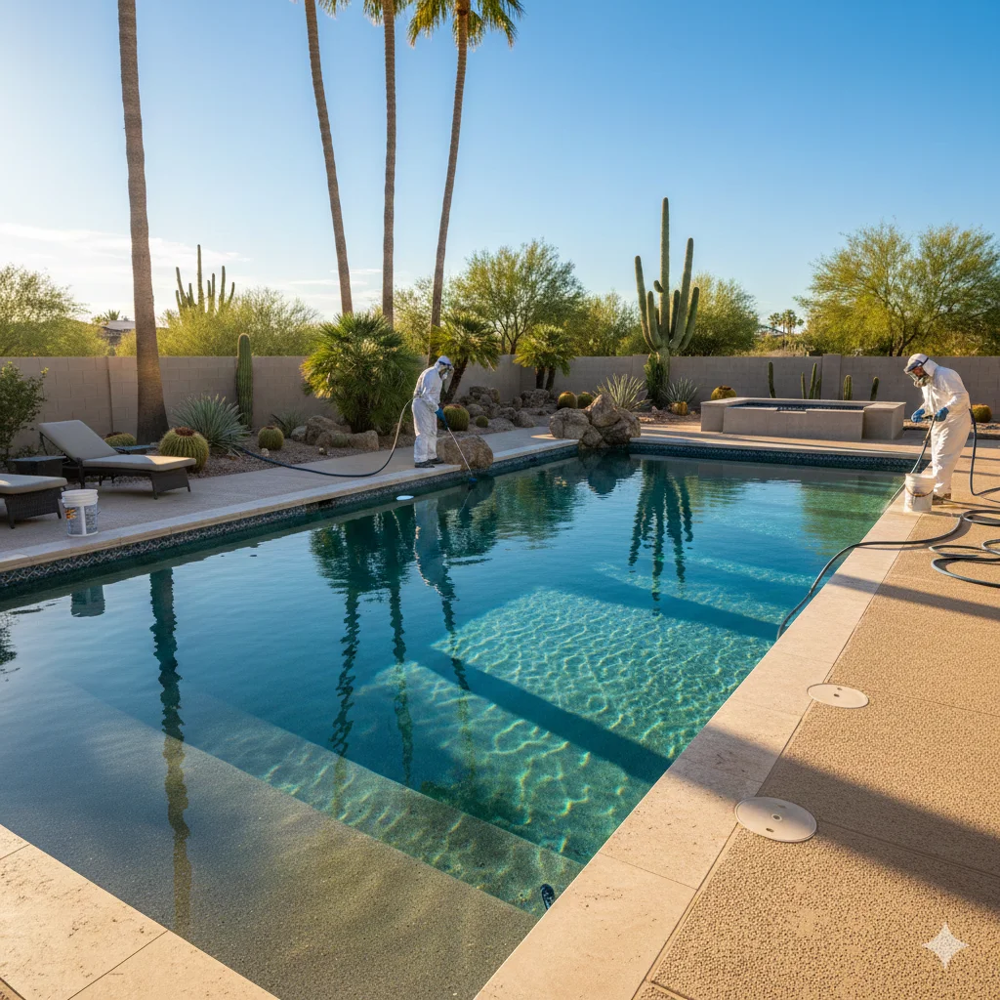
Plaster Resurfacing
Classic white plaster finish. Affordable, timeless look with smooth texture.
Learn More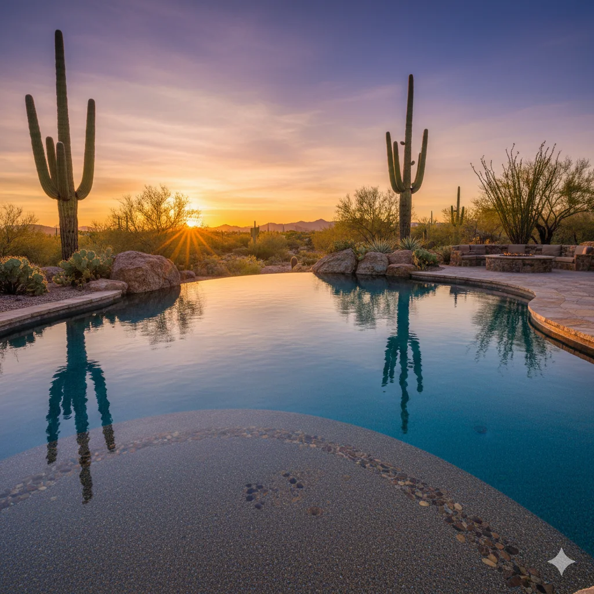
Pebble Tec & Aggregate
Superior durability with beautiful natural texture. Lasts 15-20+ years.
Learn More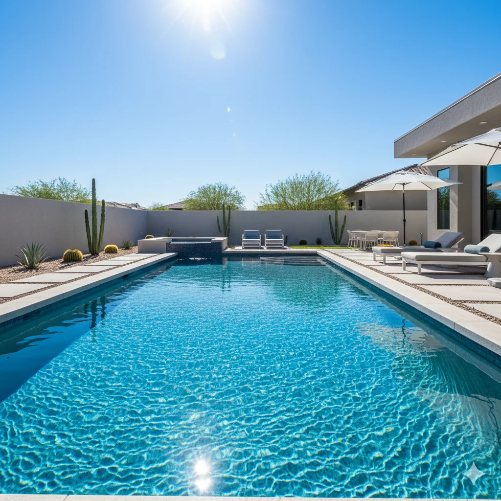
Quartz Finishes
Sparkling quartz aggregate with vibrant color options. Stain-resistant.
Learn More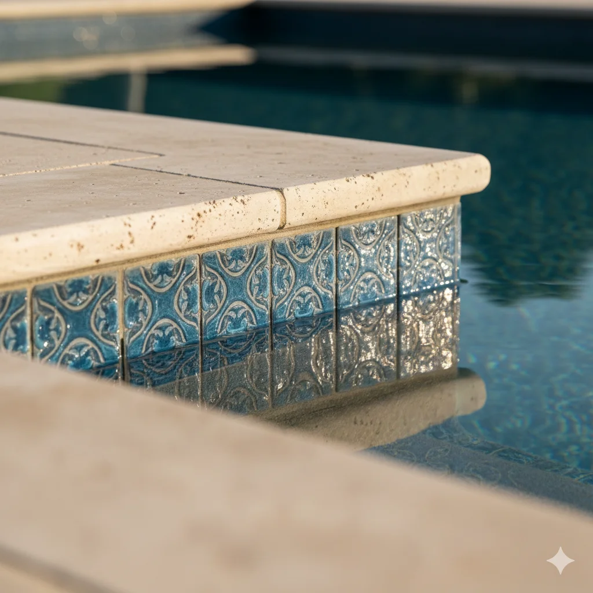
Tile & Coping Repair
Waterline tile replacement and coping stone restoration.
Learn More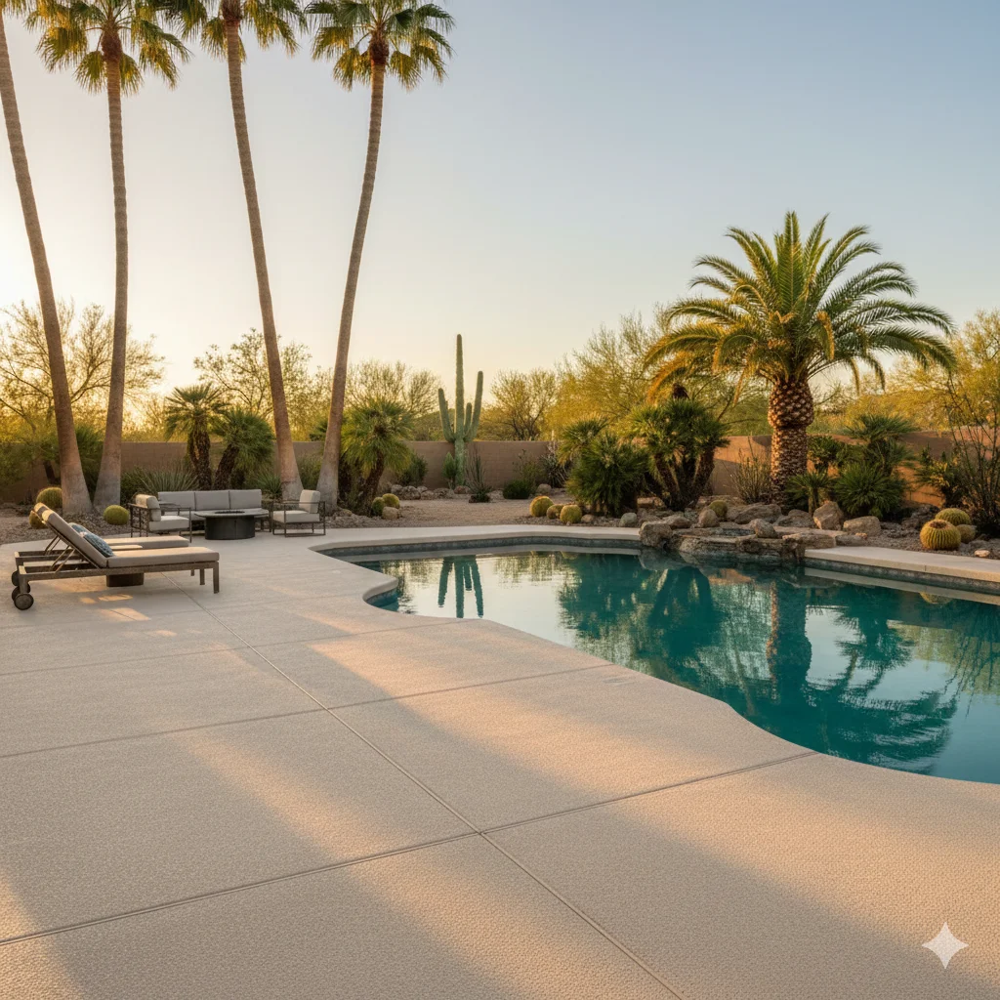
Pool Deck Resurfacing
Beat the Arizona heat with cool deck and textured coatings.
Learn More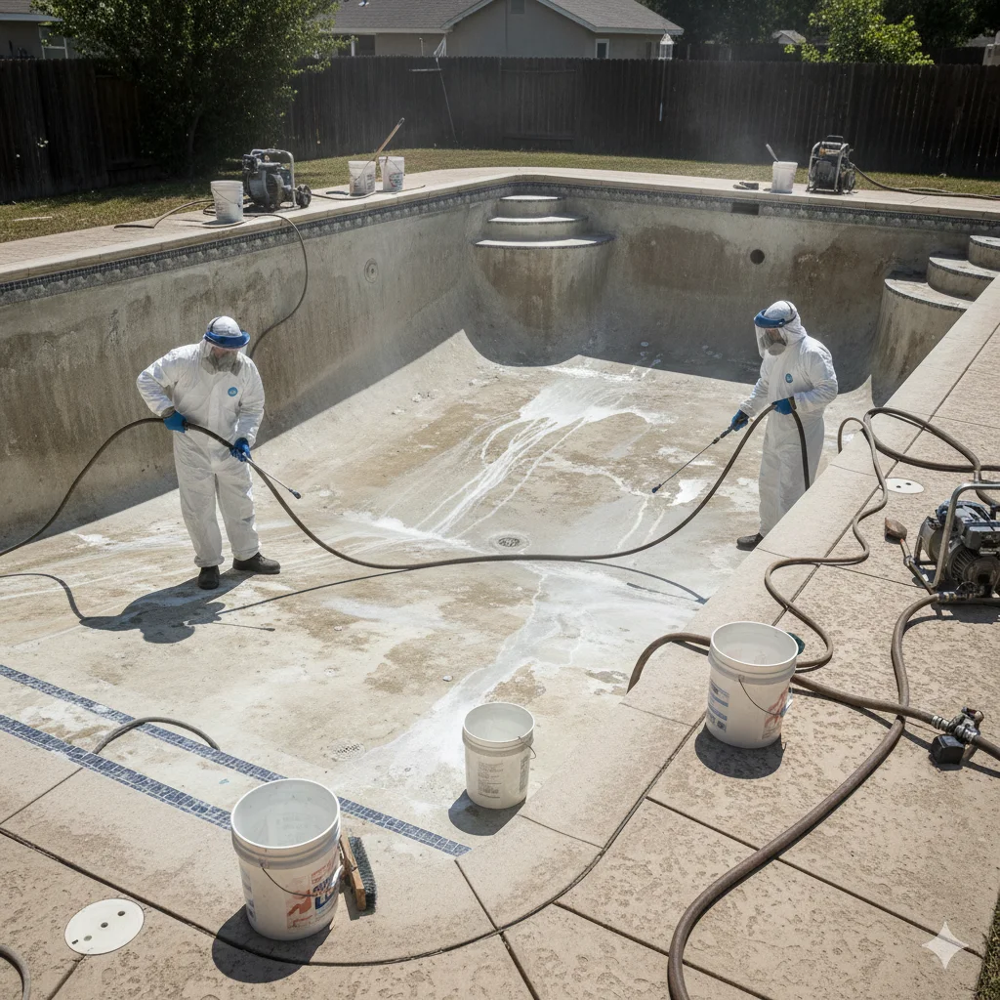
Draining & Acid Wash
Deep cleaning to remove stains, calcium deposits, and algae.
Learn MoreWhy Phoenix Homeowners Choose Us
Arizona pool expertise you can trust
Arizona Climate Experts
We understand how Phoenix's intense sun, hard water, and heat affect pool surfaces. Our materials and techniques are chosen specifically for the desert environment.
Expert Craftsmanship
Proper surface prep, professional application, and meticulous attention to detail on every job. We take pride in work that lasts.
7-Year Warranty
We stand behind our work with a comprehensive warranty. Licensed and insured contractor with full liability coverage for your peace of mind.
Credentials & Certifications
Licensed, insured, and certified professionals
What Our Customers Say
Real reviews from Phoenix pool owners
"Our 15-year-old plaster was stained and rough. They installed Pebble Tec and it looks incredible. The crew was professional and finished in 6 days. Highly recommend!"
Scottsdale, AZ
"Got three quotes and they had the best value. The quartz finish they recommended is beautiful and my pool has never looked better. Great communication throughout."
Gilbert, AZ
"They replaced our cracked tile and resurfaced the whole pool. The difference is night and day. Fair pricing and they cleaned up perfectly when done."
Mesa, AZ
"After 20 years our pool was in rough shape. They recommended the Pebble Tec Desert Sand finish and it transformed our backyard. Worth every penny for the durability."
Tempe, AZ
"Second time using them - did our pool 5 years ago, now they did our spa. Same great quality and the crew remembered us! That's the kind of service you don't find anymore."
Chandler, AZ
"We went with the basic plaster to stay on budget and couldn't be happier. Looks brand new and they even fixed a small crack we didn't know about at no extra charge."
Phoenix, AZ
Our Recent Work
Pool transformations across the Phoenix Metro Area
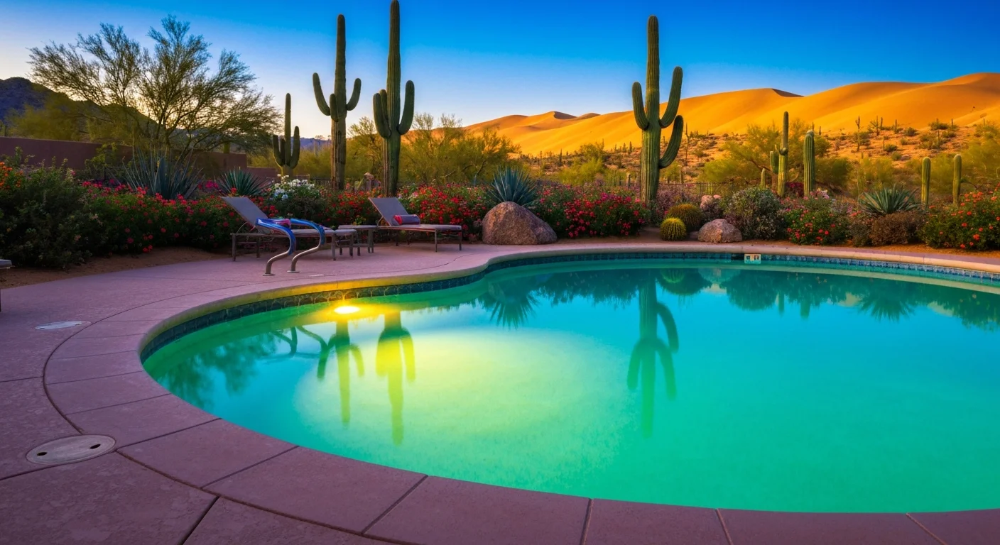
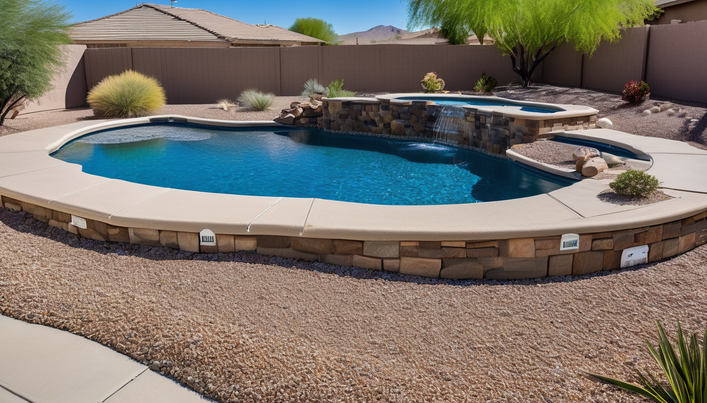
Before After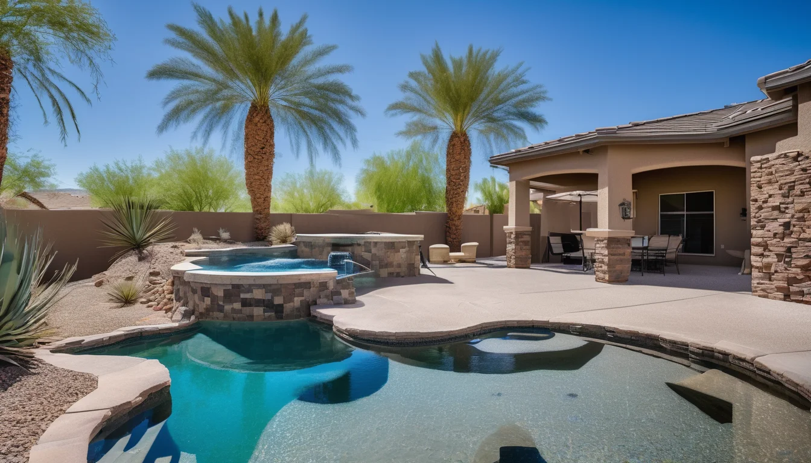
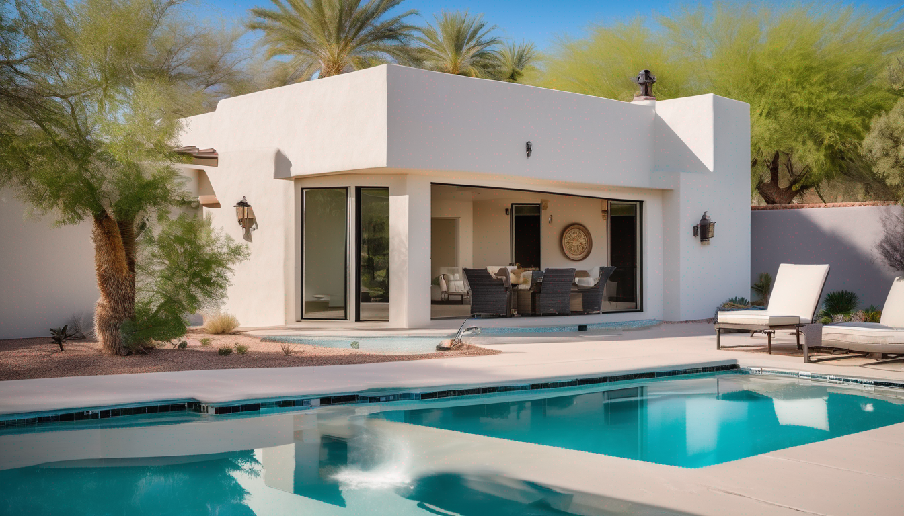
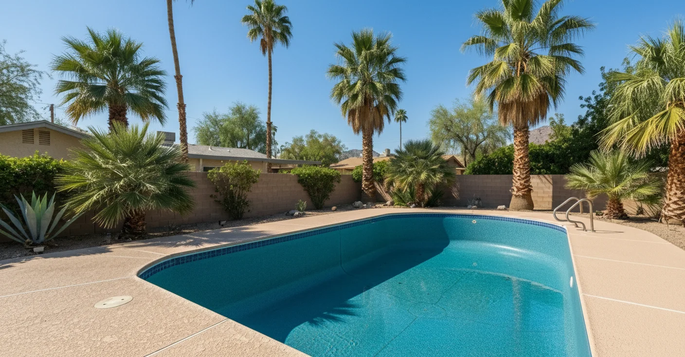
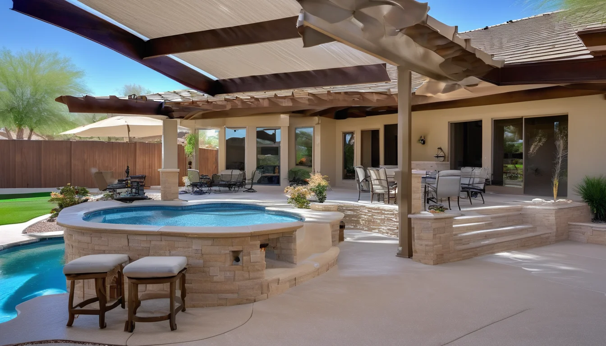
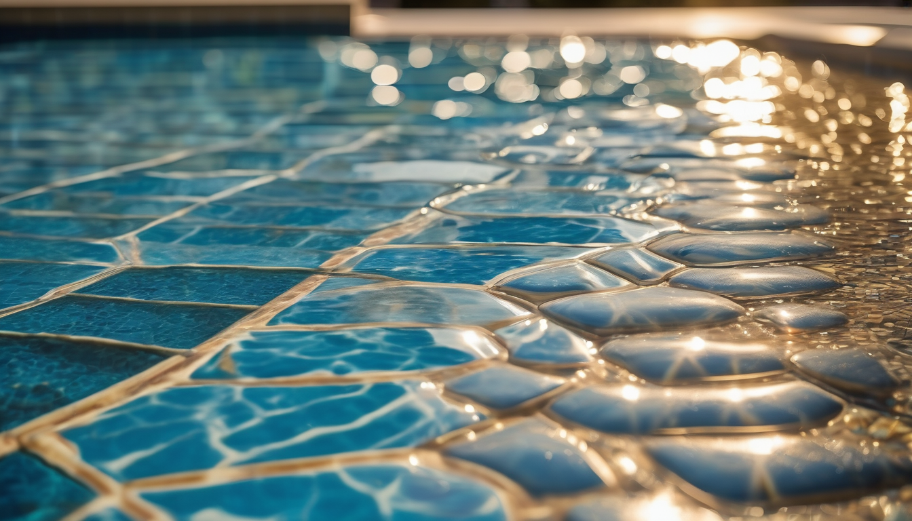
Frequently Asked Questions
Common questions about pool resurfacing in Phoenix
Service Areas
Serving the entire Phoenix Metro Area
Phoenix
Arcadia, Biltmore, Ahwatukee
Scottsdale
North Scottsdale, Old Town
Mesa
East Mesa, Superstition Springs
Tempe
South Tempe, Alameda
Chandler
Ocotillo, Sun Lakes
Gilbert
Power Ranch, Val Vista
Glendale
Arrowhead, Westgate
Peoria
Vistancia, Lake Pleasant
Paradise Valley
Camelback Mountain area
Cave Creek
Tatum Ranch area
Fountain Hills
Eagle Mountain area
Queen Creek
San Tan Valley area
Why Phoenix Pools Age Faster — And What We Do About It
Pool surfaces in Phoenix face conditions that make most national resurfacing guides useless. Phoenix's intense UV (300+ sun days/year) and naturally alkaline water supply (pH 7.8–8.2) are harder on pool plaster than nearly any other U.S. market. Here's what we account for in every job:
- Intense UV exposure: Phoenix's 300+ days of direct sun per year break down plasticizers in plaster faster than nearly anywhere in the country. We use UV-stabilized aggregate in our quartz and pebble finishes.
- Alkaline water: Phoenix's water supply runs high on the pH scale (7.8–8.2), which causes calcium scaling on surfaces faster than neutral-pH markets. Our startup chemistry protocol is calibrated for local water chemistry, not a generic national template.
- Expansion and contraction: Temperature swings cause the pool shell to expand and contract. Hairline surface cracks are more common here than in temperate climates. Proper plaster thickness prevents this from becoming a structural issue.
We've resurfaced pools across Phoenix, Scottsdale, Tempe, Chandler, Gilbert, Mesa, Glendale, and the surrounding East and West Valley. If there's a pool condition specific to your neighborhood's water source or microclimate, we've seen it.
Ready to Stop Managing a Failing Surface?
Phoenix's peak booking season fills 3–4 weeks out. If you want the pool done before summer, now is the time to call — not after the first hot weekend. The estimate is free. The call takes 10 minutes.